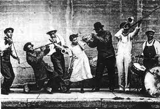
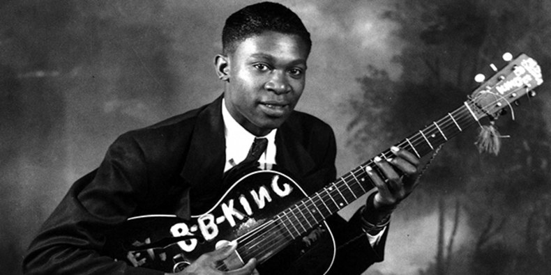

Surgimento do Blues
O gênero surgiu nos Estados Unidos a partir do século XVII, quando os escravos negros da região sul faziam canções de trabalho nas plantações de algodão e outras músicas relacionadas a sua fé religiosa. O conceito de "blues" só se tornou conhecido depois do término da Guerra Civil Americana, que passando a representar a essência do espírito da população afro-americana.
As letras geralmente passavam uma mensagem de protesto contra aquela situação. Enquanto um vocal lançava um verso, um coro de vozes, seguiam repetindo aquele verso. Esses cantos eram acompanhados por instrumentos musicais fabricados pelos próprios escravos.
Esses cantos abriram caminho para um estilo musical denominado Blues que pode ser definido como um estilo. Com o passar dos anos este estilo musical foi ganhando força e adentrando na cultura da elite norte americana. Um dos primeiros artistas a fazer sucesso foi Charley Patton na década de 1920. Outros nomes surgiram nas décadas seguintes como Son House, Willie Brown, Leroy Carr, Bo Carter, Muddy Waters e B.B. King. Os instrumentos musicais também acompanharam essa caminhada. À medida que iam se modernizando, permitiam que os artistas explorassem esse gênero musical de diferentes formas criando novas possibilidades.
No final do século XX, o Blues tem uma recaída na cena musical, mas com o auxílio do guitarrista americano Stevie Ray Vaughan, o Blues ressurge com suas forças renovadas. Stevie começou a regravar grandes clássicos combinando elementos e criando sua própria marca.
Blues através das décadas
Nos anos 60, o gênero serviu de fundamento para a criação de um dos maiores estilos musicais: o rock. Elvis Presley tinha sua origem totalmente enraizada no blues. Bandas como Beatles, Rolling Stones e Led Zeppelin também foram totalmente influenciadas pelo mesmo.
Durante os anos 70, o estilo começou a perder seu espaço para outros gêneros com elementos eletrônicos, especialmente da era Disco. No início dos anos 80, as apresentações de blues começaram a ficar cada vez mais escassas, pois a própria moda da época rejeitava a sua tendência não-comercial, entrando em contraste com a fase "Dancing”.
Porém, graças ao guitarrista americano Stevie Ray Vaughan, o gênero ganhou novas forças. O músico começou a regravar clássicos e a criar sua própria marca, unindo elementos típicos do blues de Chicago, como Albert King, B.B. King e Howlin' Wolf, com o de Jimi Hendrix.
Após a morte de Vaughan, o gênero nunca mais teve a mesma força de antes, sendo gradativamente esquecido pelas massas a partir dos anos 90. Em razão do apelo comercial da indústria da música, infelizmente o blues tomou uma proporção cada vez mais restrita, algo definitivemente diferente do que se via na época de sua criação.